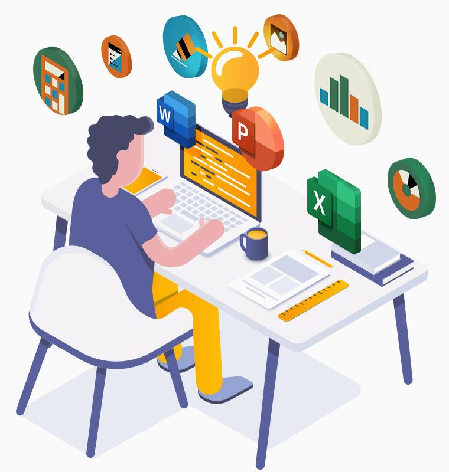
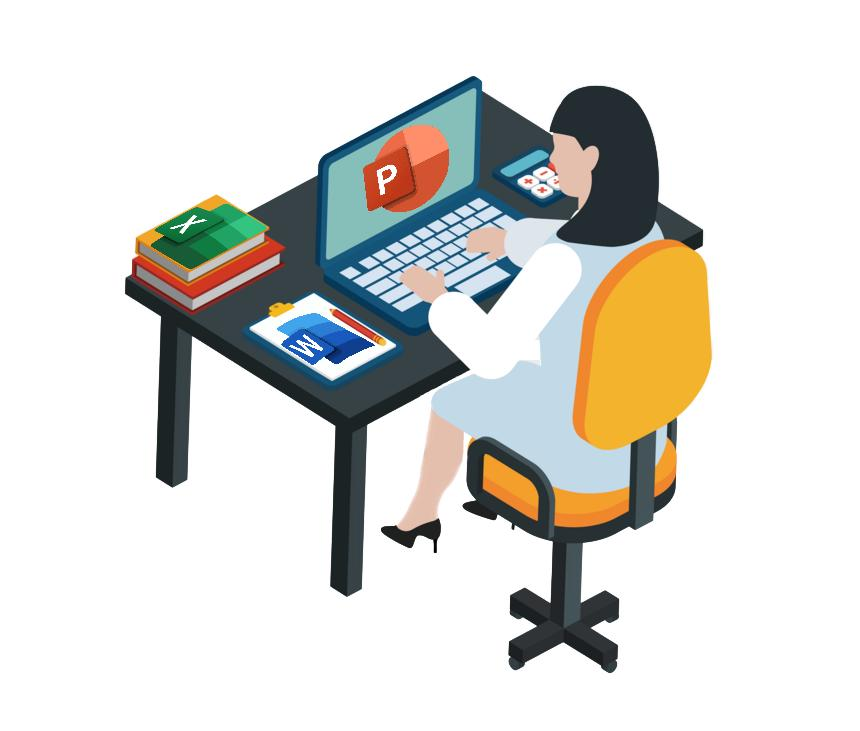
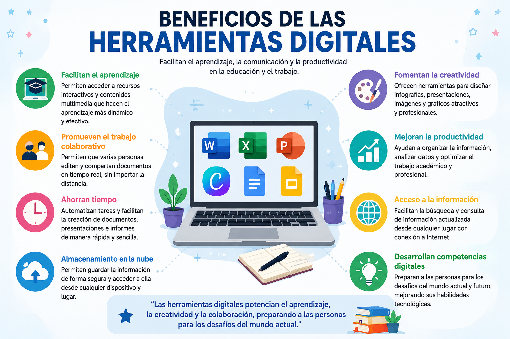

La elaboración de documentos, presentaciones, infografías e imágenes mediante herramientas digitales permite crear contenidos visuales y educativos de manera profesional. Estas aplicaciones facilitan la organización de la información, el trabajo colaborativo y la comunicación efectiva en entornos académicos y laborales. El uso de plataformas como Canva, Google Docs, Google Slides, Microsoft Word, Microsoft Excel y Microsoft PowerPoint ayuda a desarrollar competencias digitales, mejorar la creatividad y presentar la información de forma clara y atractiva.

La organización y almacenamiento de información digital consiste en clasificar, ordenar y guardar archivos electrónicos de manera que sean fáciles de encontrar, utilizar y proteger. Una buena organización mejora la productividad, evita la pérdida de información y facilita el trabajo colaborativo.
Es un procesador de texto que permite crear documentos como informes, cartas, tareas, proyectos y trabajos de investigación. Ofrece herramientas para dar formato al texto, insertar imágenes, tablas, gráficos y referencias.
Es una hoja de cálculo utilizada para organizar datos, realizar cálculos, elaborar tablas, gráficos y analizar información mediante fórmulas y funciones.
Permite crear presentaciones multimedia con texto, imágenes, videos, animaciones y gráficos para comunicar ideas de manera dinámica y profesional.
Es una plataforma de diseño gráfico en línea que facilita la creación de infografías, presentaciones, carteles, publicaciones para redes sociales, certificados y otros recursos visuales mediante plantillas prediseñadas.
Es un editor de documentos en línea que permite crear, editar y compartir archivos de texto de forma colaborativa y en tiempo real desde cualquier dispositivo con acceso a Internet.
Es una herramienta para diseñar presentaciones en línea que facilita el trabajo colaborativo, la incorporación de imágenes, videos y animaciones, así como la edición simultánea entre varios usuarios.

📚 Facilitan el aprendizaje mediante recursos interactivos y contenido multimedia. 🤝 Promueven el trabajo colaborativo permitiendo que varias personas editen documentos en tiempo real. ⏱️ Ahorran tiempo al automatizar tareas y simplificar la creación de documentos y presentaciones. 🎨 Fomentan la creatividad mediante plantillas, imágenes, gráficos e infografías. ☁️ Permiten almacenar información en la nube, facilitando el acceso desde cualquier dispositivo. 📈 Mejoran la productividad al organizar la información y optimizar el trabajo académico y profesional. 🌍 Favorecen el acceso a la información desde cualquier lugar con conexión a Internet. 💡 Desarrollan competencias digitales necesarias para el estudio, el trabajo y la vida cotidiana.
Organizar la información antes de diseñar el recurso. Utilizar plantillas con un diseño limpio y atractivo. Emplear imágenes e íconos de buena calidad. Mantener colores y tipografías coherentes. Revisar la ortografía antes de compartir el documento. Guardar copias de seguridad en la nube o en dispositivos externos.
